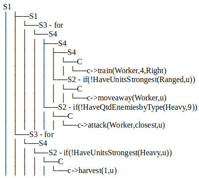
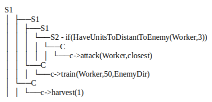

Competition Format and Resources Available
Specifications of the computational resources to be used.
The program synthesis competition is organized with one track. The track is composed with different maps. Each participant is allowed to send a
synthesizer that will be used by the organizers to generate one strategy (script) for each map. The synthesizer will run following the limitations
described below. After the time allowed for each participant, the synthesizer needs to output one strategy. The final strategy, for each map, will be
evaluated following some rules. See the section Score for more information.
The competition will be run on machines running Unix-based OS to guarantee a better overcome and response time. Each participant will have access to
the following resources:
- Time limit for each map: 24 hours.
- CPU usage: Maximum of 8 CPU's will be available to parallel processing.
- Memory: Maximum of 16 GB's of memory.
- GPU: Unfortunately it will not be available in this edition.
- Disk Space: Maximum of 1 GB in disk.
Limitation condition
The Synthesizer and Submission
The project to be evaluated in the competition.
Each participant can send different synthesizers to the competition. We encourage submissions from the same participant or group, if the synthesizer contains
improvements or differentiation between the submissions. Submissions with the same code just with small changes and tunings will be replaced by the last entry.
To send your synthesizer, the participant can follow the steps bellow:
- Step 1: Preparing the project, without the entire microRTS or the framework.
- Step 2: Upload your project to a public GitHub repository. If the entire synthesizer is in the repository, jump to step 4.
- Step 3: If you need to add libraries, folders, or different contents, compact your synthesizer in a zip, rar, or 7zip file.
- Step 4: Send all the materials(described above) to the email needs_to_define>@gmail.com.
Submission requirement
Interpretability
The importance of being understood.
Interpretability is one aspect considered crucial in this competition. We believe that strategies can be helpful to guide programmers and game designers in the task of write scripts for games. To allow professionals
to read and learn with strategies produced by the synthesizers in the competition, the interpretability characteristic will be a measure to define the winner in this competition.
What do we menas with interpretability?
Our framework allows the solution to be printed in a couple of ways. The table below shows two examples of the same solution to a 8x8 map.
This simple solution is a playable strategy produced by one local search algorithm using the framework.
| Pure String (strategy 1) |
| for(u) (if(!HaveUnitsStrongest(Heavy,u)) then(harvest(1,u)))
for(u) (if(!HaveQtdEnemiesbyType(Heavy,9)) then(attack(Worker,closest,u))
if(!HaveUnitsStrongest(Ranged,u)) then(moveaway(Worker,u))
train(Worker,4,Right)) |
| Tree (preorder traversal) |
|

|
The strategy above (strategy 1) looks simple in behavior, however, it requires some effort to be fully understood by any programmer. Let's see an example that requires less effort to be comprehensible.
| Pure String (strategy 2) |
| harvest(1) train(Worker,50,EnemyDir) if(HaveUnitsToDistantToEnemy(Worker,3)) then(attack(Worker,closest)) |
| Tree (preorder traversal) |
|

|
This new strategy, called strategy 2, requires less effort to be understood and it has a behavior acceptable in the MicroRTS against other strategies in
a map of size 8x8. Our competition encourages simplicity and comprehension in the strategies developed by the synthesizers.
How will the interpretability evaluate?
In the 1st edition of the competition, we will keep the interpretability as simple as possible. We will count the number of nodes S2, S3, S5, and C in
the final strategy. It means that we will take into consideration the number of if's, for, booleans, and commands that the strategy has.
Let's calculate the interpretability score for strategy 2, shown in the table above.
| Fragment |
Type |
Score |
Subtotal |
| harvest(1), train(Worker,50,EnemyDir), attack(Worker,closest) |
C |
3 |
3 |
| if() then() |
S2 |
1 |
4 |
| HaveUnitsToDistantToEnemy(Worker,3) |
S5 |
1 |
5 |
| Total |
|
|
5 |
The final score, considering the number of fragments that your strategy has, is given by the score table below.
| Nº of Fragments |
Score |
| equal or less than 10 |
0.0 |
| Each fragmento above 10 will decrease the score in |
0.01 |
| 100 or more |
1.0 |
Requirement
Score and Classification
Evaluating projects.
The partial score will be calculated for map, following the function:
| Partial Score = Winning Rate - (Winning Rate x 0.4 x Interpretability Score) |
The partial score is calculated for each map, for each competitor. The total score, the value used to define the winner, is defined by the average value of
all the partial scores obtained by the competitor. Let's see one example for competitor X.
| Map |
Strategy |
Winning Rate |
Interpretability Score |
Partial Score |
| map 1 |
C.X.1 |
90.8 |
100.0 |
94.48 |
| map 2 |
C.X.1 |
82.4 |
94.2 |
87.12 |
| Total Score |
|
|
|
90.8 |
Winning Rate
The winning rate is defined by the score in a round-robin tournament between all the entries. It means that the final rate is defined by the average value obtained by an entry against
all the other strategies in a specific map. See more details in the MicroRTS AI Competition in the section Game Format
or Competition Results.
Evaluating rule